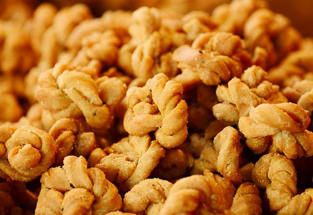
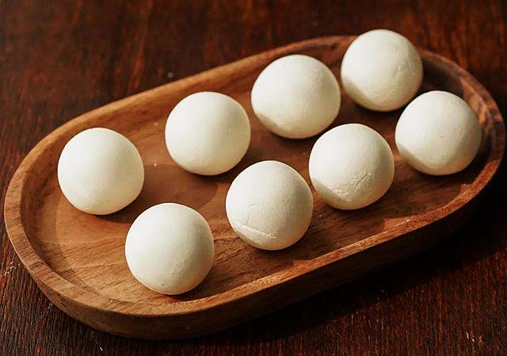
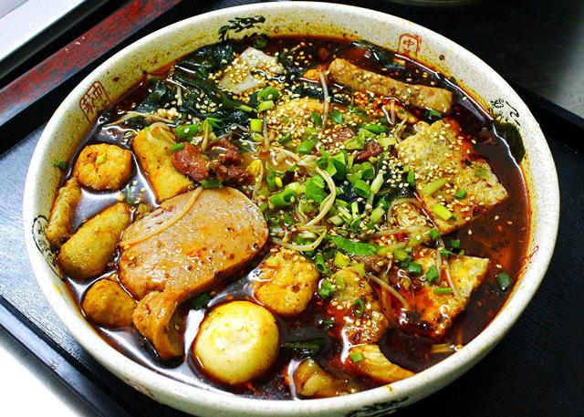
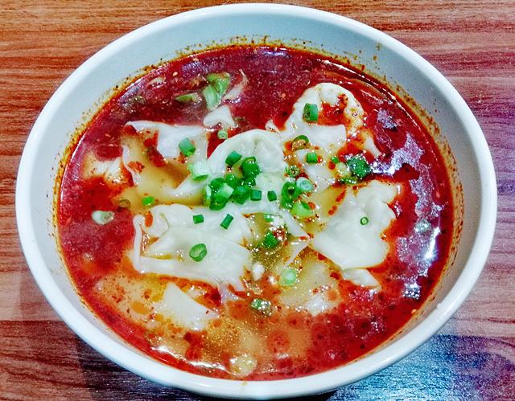
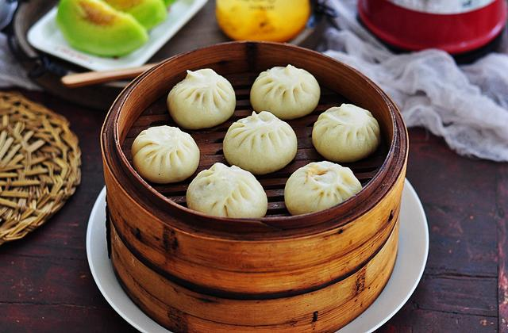

山西-美食
 |
图4-1 重庆小面 |
重庆小面是重庆四大特色之一，也是重庆人的主食之一，很多重庆人的一天都是从一碗重庆小面开始的。 重庆人对小面的热爱一点不亚于火锅，他们可以几天不吃火锅，但是不能一天不吃小面，重庆人对重庆小面的喜爱与其说是上瘾，还不如说是一种依赖。 每一位来到重庆的外地游客，吃的第一餐大多都会是一碗重庆小面，相信如果是你来了应该也会忍不住吃上一碗的。 |
 |
图4-2 酸辣粉 |
酸辣粉历来就是重庆人平时最爱吃的传统小吃之一。重庆的酸辣粉都是用红薯粉和豌豆淀粉作为原料，采用最传统的手工漏制法制作而成， 吃的时候配上调料，吃起来粉丝筋道，味道麻辣酸爽，吃过的人都赞不绝口，有“天下第一粉”的美誉。 |
|  |
图4-3 陈麻花 |
重重庆陈昌银麻花，大家都简称陈麻花，这是重庆特色小吃的典范代表，有“中国名小吃”和“重庆名点”的称号。 陈麻花有多种口味，甜的、麻辣的、五香的、椒盐的等等，每种口味都各有特色，吃起来酥脆化渣，深受喜爱。 |
|  |
图4-4 山城小汤圆 |
山城小汤圆就是重庆小汤圆的意思，因为重庆的别称就叫山城。山城小汤圆是用优质糯米，先用清水浸泡一个星期， 等糯米泡膨胀后用石磨手工磨浆，然后用猪油、黑芝麻等辅料入馅制作而成，具有皮薄馅大、香甜滑糯等特色，吃起来也不腻口。 |
|  |
图4-5 麻辣烫 |
麻辣烫在重庆是很受欢迎的特色小吃，麻辣烫的味道和食用方式有点像火锅， 所以也有人说麻辣烫是一个人的火锅，可以根据自己的喜好选择食材一起煮，吃起来麻辣鲜香，喜欢吃辣的人都很难经得起麻辣烫的诱惑。 |
|  |
图4-6 抄手 |
说到抄手，很多人都容易被四川的龙抄手洗脑，以为只有四川才有抄手，其实不是，重庆的抄手可是很有名的， 而且是重庆人很爱吃的美食之一，其喜爱程度和小面一样，吃的不仅是美食，更是一种情怀。 |
|  |
图4-7 九园包子 |
九园包子是重庆的老字号美食，其特色是造型美观、洁白松软、馅多且鲜嫩，吃起来酱香味十足， 吃过的人都赞不绝口，有中华名小吃和重庆老字号等荣誉，在全国各地的包子里也是排得上名次的，值得一尝。 |